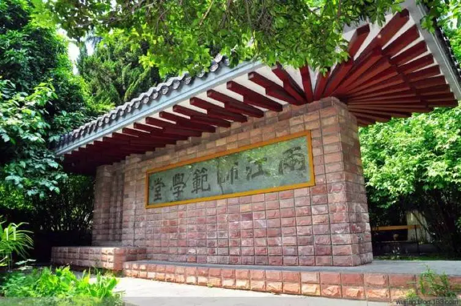

三江师范学堂是清末实施新教育后规模最大、设计最新的一所师范学堂，也是中国近代最早设立的师范学校之一。学堂模仿当时的日本教育体制，以“中学为体，西学为用”为办学方针。 三江师范学堂的创始者，是1902年前后相继担任或署理两江总督的刘坤一、张之洞和魏光焘。 1902年，两江总督刘坤一首上《筹办学堂折》，1903年，张之洞又以《创办三江师范学堂折》上奏清廷，在明朝国子监旧址（今东南大学四牌楼校区 ）建立三江师范学堂。1903年9月，三江师范学堂挂牌开办，1904年招生开学，1905年改名两江师范学堂。
